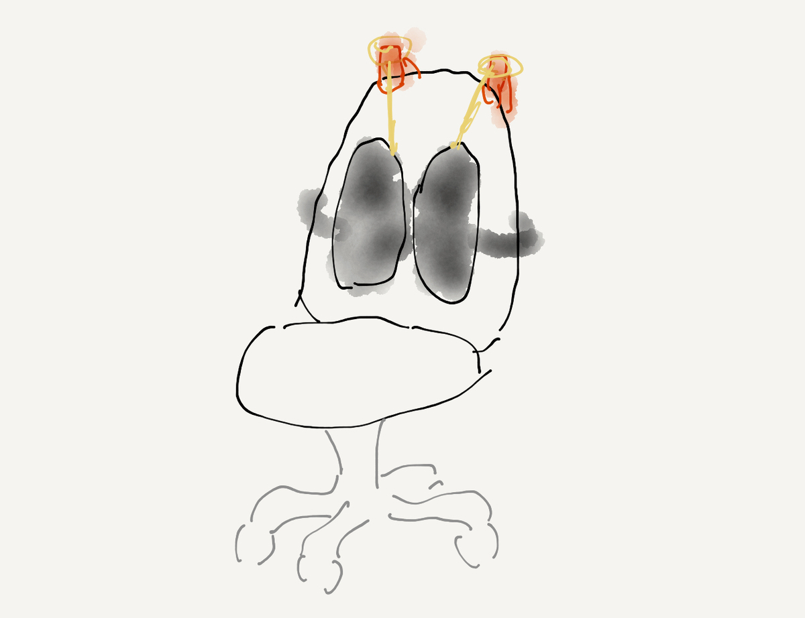

腰痛で座るのが辛かったので、今ある椅子に何か問題がないか探っていて、座面が大きいものを使っているので背もたれが遠くて辛いなぁと思っていたら、いいものを見つけた。
今日届いて使ってみて、これが非常によかった。ランバーサポート付きのオフィスチェアがあることは知っていたけれど、何万円もする高いものが多いなか、これは3480円とリーズナブル。
自然と良い姿勢になる感じで、今まで背もたれはどうしても途中で合わなくなって姿勢が悪くなることが多かったのだけれど、これがあれば特に腰痛の時期は助かるかもしれない。
3年前くらいに椎間板ヘルニアになったときも、いろんな椅子を試して、実際何万円もする腰痛対策椅子なんかを買ってみたりもしたのだけれど、結局無理がきてかえって痛みがあったりして辛かったので、この商品のように、取り外しができて気分によって変えられるというのはとても良いかもしれない。
ちなみに商品の性質上仕方ないのだけれど、高さ調整が意外に難しい 1 という問題があって、自分は椅子の最上部にクリップをつけて、そこに自在結びで長さを変えれる紐でこの商品を2点で吊るしている。模式図を描くとしたらこんな感じ ↓

元々バンドがついているのもあって安定していて、最適なポジションに好きに移動できるというのも、案外固定された椅子を買うよりもいいかもしれない。
またここから数日使ってみて、どんな感じだったかを記録していきたい。